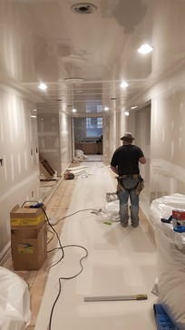
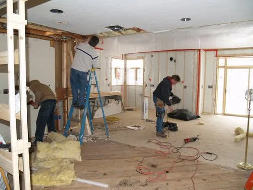
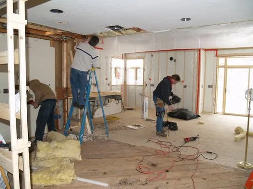
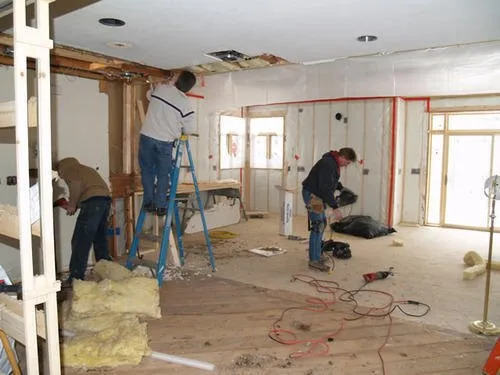

What Is Interior Work?
Interior work covers all construction and finishing tasks that enhance the look, comfort, and functionality of indoor spaces. This includes flooring, trim, molding, doors, windows, and custom carpentry.
Why Is Interior Work Important?
- Improves comfort and livability
- Enhances style, design, and functionality
- Increases property value
- Repairs or upgrades outdated features
- Provides custom finishes tailored to your needs
Steps in an Interior Work Project
- Planning & Design: Determine layout, finishes, and custom needs.
- Preparation: Remove old materials and prep surfaces.
- Installation: Install flooring, trim, or other components.
- Finishing Touches: Paint, stain, or polish surfaces.
- Final Review: Ensure quality and client satisfaction.
Signs You May Need Interior Work
- Outdated or worn finishes
- Damaged flooring, trim, or doors
- Desire for a modernized look
- Rooms lacking functionality or flow
Note: Interior work enhances both aesthetics and comfort, giving your home or business a fresh new atmosphere.


 

Back to Services
